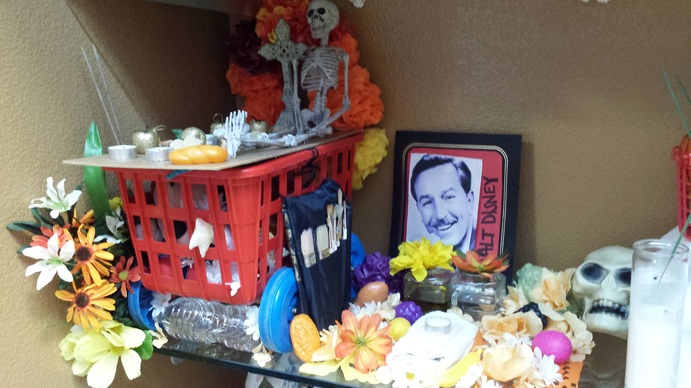
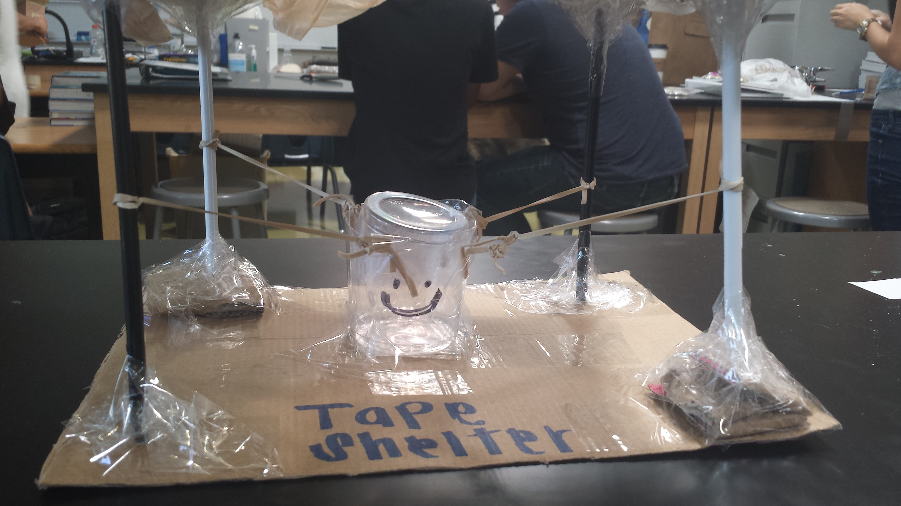

During my sophomore year, I was able to learn how to use Flash. It was during Spring 2014. In my opinion, working with flash is really complicated. It takes a lot of time and effort to create a small animation. First of all, we were assigned to create a storyboard for a fable we wanted to animate. I choose to animate the fable called “The lion and the mouse”. I started of by creating all the graphics in Illustrator since it was easier for me to transport it later on to flash. Then, everything was supposed to be divided into scenes to make it easier for us. The graphic design teacher gave us approximately a month to complete this PBL. It was one of the hardest projects I have done. Trying to make something work for the ten thousand time takes patient. I had to start over again several times but I learned to save often. I really like how the animation came out because I wasn't expecting it to be good.
Ofrenda

Use of resources
My spanish teacher was always teaching about cultures. By the end of the year, I had gained knowledge on different hispanic cultures and their traditions. It was during Winter 2014. We did a project on Ofrendas around halloween. We had to learn about the history of Ofrendas to be able to complete this project. Ofrendas have specific requirements and things they must include. Ofrendas are altars made of collection of objects during the Dia de los Muertos (day of the death). We had to create an Ofrenda for a famous person that had passed away but set a good example while he/she was alive. My group consisted of 4 people and we all agree to do Walt Disney. I really like this project because it gave me a perspective on is different culture. I always wondered why The mexican culture did those things and being able to do it and understand it is amazing.
This project was the most difficult one out of all the ones I have done in my whole high school career. It was during Spring 2014. We had to create a website for a client( English teacher ) that needed to show the next year freshman's more information about the Dante’s Inferno book. In groups of around 4-5 people we had to create a website for our client. It was the most difficult project because my team members and I had basic knowledge on CSS. We divided the work and each of the team members had to help the other. Our website was the most basic one out of all the groups from our class. The day of the presentation, Mr.Moore, our client, saw all of our websites and choose another groups. I learned to not procrastinate from this project. It also taught me to be patient and look for outside resources to get the project done.
Revolution
Collaboration
In my history class, we learned about several countries and colonies that decided to overthrow their ruling government. It was during Winter 2014.We were assigned groups of 3 and we had to create an infographics to show their role to revolution. We were assigned Mao Zedong. We did all our research such as the reasons for revolution, government prior to the revolution, major event of the revolution, form of government established, and the significance of the revolution. We then shared our infographic with all the class for everyone understand our person. We used a website called picktochart.com to create the infographic. This website was provided by our teacher for all of the teams. There were several things that I learned from this project but the most important one is team work. Dividing the work equally was hard since 1 person could one work at a time in the website.
Shelter

Work Ethic
The first week of my Sophomore year, my chemistry teacher, gave us a project of protecting an egg falling from a second floor. It was during Fall 2014. It was either you pass or you fail. My partner and I created a “Tape Shelter”, we used a shoebox, cup, hangers, rubber band, plastic bag, and a lot of tape. We created the base with the shoebox, it had a bottom and top incase it flipped. On the sides we put part of the hangers to keep the top and the bottom in place. We used the rubber band by tying the hagers with the a cup in the middle that would hold the egg. We cut the cup in half so that the egg was protected top and bottom. On the top we put a plastic bag so it would slow down when falling from the second floor. It was a success, the egg didn't die.
Hip Hop Meets It
Presentation Skills
Out of all the PBL's this one was the best one. We were able to teach kids of different ages while they taught us a cool dance routine. This PBL went on for 2 during the Winter of 2014. The first day the the Hip Hop group taught us the routine we would be performing the second day. We were divided into groups in order for all of us to understand and learn a bit more about each other. The second day, we taught the Hip Hop kids the basics of Illustrator. The kids had the opportunity to create a logo that best described them as an individual. As a Web Design class, we had to show the kids how much we love to program and Web Design. We also had a flashmob and we presented that on front of both lunches. My presentation skills grew enormously due to this PBL.